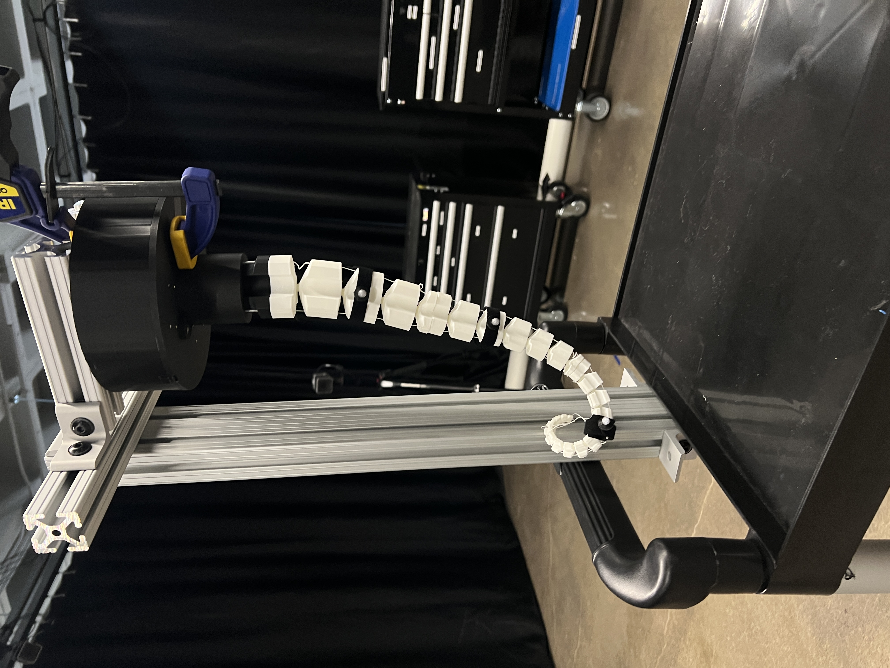
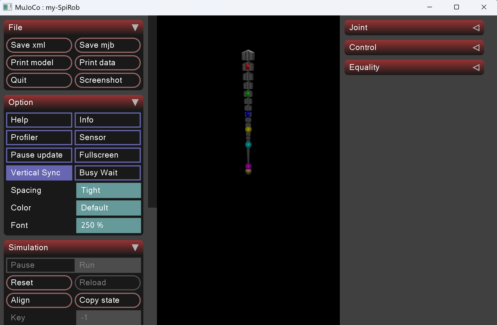
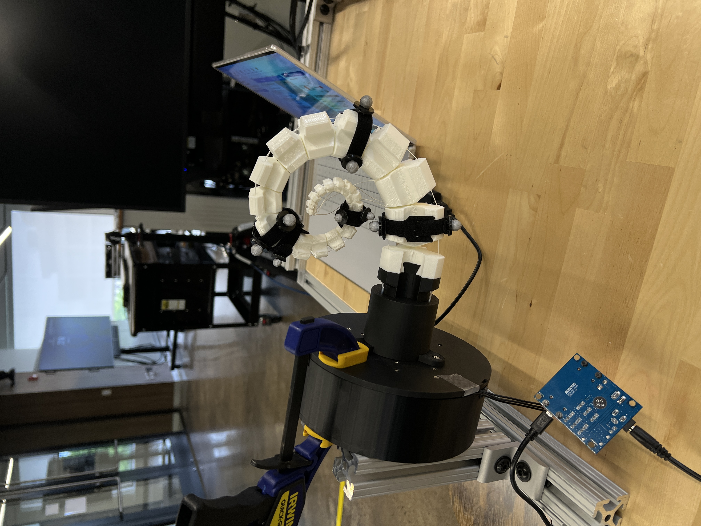

As a Research Assistant at the Cybernetics and Physical Intelligence
Laboratory (CyPhi Lab) under the Human Fusions Institute at Case
Western Reserve University, I focused on bridging the gap between
physical and virtual robotic control. Working with a hyper-redundant,
cable-driven robotic tentacle arm, I developed real-time position
estimation and control pipelines to improve tracking precision and
reliability for next-generation soft robotic systems.
Engineered position-estimation and control systems for a
hyper-redundant, cable-driven robotic tentacle arm using
Dynamixel smart actuators.
Developed automated Python scripts within VS Code to optimize
the robotic homing process and accurately parameterize
cable-position constraints.
Synchronized physical arm movements with a virtual environment
in real time, utilizing MuJoCo (Google DeepMind's advanced
physics simulator) to perfectly mirror physical actions using
torque controls.
Fused motion-capture ground truth and cable-length data through
an Extended Kalman Filter (EKF) and initiated the deployment of
embedded bend sensors for high-precision,
infrastructure-independent orientation tracking.
Photo Gallery

Arm with Motion Capture Markers

Model in MuJoCo Physics Engine

Full SpiralVicon Nexus Motion Capture Tracking
Demo videos
Motion Control DemoLive IR Marker Tracking in MuJoCo
.png)